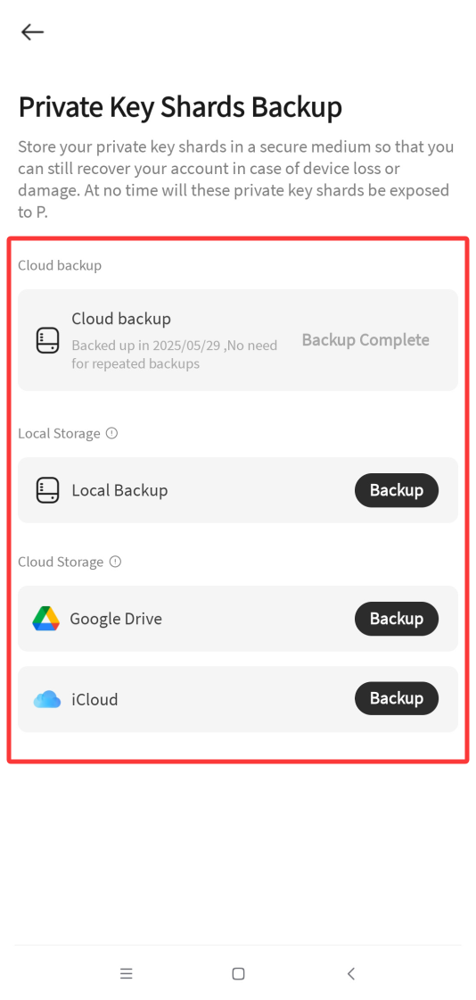

钱包加社交合二为一，到底值不值得在 PCNapp 上花时间
一款把 MPC 加密钱包和加密社交揉进同一个 App 的产品，无助记词、自托管、AI 风控——但功能多也意味着上手成本不低。我算了三档使用强度的时间账，帮你判断要不要入坑。
它到底值不值得掏钱？这个问题放在 PCNapp 身上，得先改一改：这玩意儿目前根本没有内购或订阅收费的迹象，但值不值得花时间，那是另一笔账。
PCNapp 把两件通常分家的事情塞进了同一个 App：MPC 加密钱包和加密社交。你可以在上面收发链上资产、创建自托管钱包、同时发动态、加好友、逛广场。PCNapp官网给的定位是「自托管钱包 + 社交网络」——但从普通用户的角度看，这组合有点微妙：为什么要在一个社交 App 里放钱包？又为什么要在一个钱包里做社交？
免费版给了什么，什么都没给
先把家底列清楚。PCNapp 目前公开的功能全部免费开放，没有会员、没有内购、没有广告位拦截。但它也没有标注任何付费功能的路线图——这意味着你拿到的就是它的全部，而不是一个高级功能锁在后面的"体验版"。
核心功能清单大致是这样的：
- MPC 钱包创建：邮箱注册即用，不需要抄助记词。这一点本身就是最大的门槛降低——传统钱包的 12/24 个单词是新手流失的第一大杀器。
- 链上资产管理：支持多网络切换、代币添加、收发交易、Gas 费调节。基本的钱包能力都有。
- 加密社交：广场动态流、个人主页、私聊、关注、点赞收藏投票。互动行为还能积分类。

- AI 风控保护：平台侧自动监测假冒客服、钓鱼链接、风险地址，三级处置从标记到封禁。
- 备份与恢复：私钥分片可以云备份或本机备份，丢设备后靠邮箱 + 分片文件恢复。

如果说免费版"给了什么"，答案是：几乎整个产品。如果说"什么都没给"，那就是：没有高级版专属的特权。你不会因为"没付费"而碰到功能锁、限额、广告弹窗——这在当下的加密产品里，反而成了一种少见的干净。
但这里有个隐性的"时间税"：从官方下载装好后你会发现，PCNapp 的功能密度很高。钱包操作、社交互动、积分体系、安全设置——每一块都有自己的学习曲线。你花在理解这套系统上的时间，就是它真正的成本。
算三档人的时间账
我把潜在用户分成三类，分别算一下 PCNapp 的时间投入值不值。
轻度用户：只想存点小钱，偶尔看看行情
这一类人可能最不适合 PCNapp。
原因很简单：如果你只是想存点 USDT、偶尔转个账，一个传统的单功能钱包可能五秒钟就能上手，而 PCNapp 你得先理解什么是 MPC、怎么备份私钥分片、积分体系是什么、广场会不会分散注意力。这些额外复杂度对轻度用户来说是纯负担。
时间账：传统钱包上手 10 分钟够用；PCNapp 至少得花半小时搞清楚"为什么不需要助记词"和"备份到底怎么做"——而且这半小时换来的好处（无助记词），轻度用户可能感知不强烈。因为如果你只存小额资产，助记词抄在纸上丢抽屉里其实够用了。
结论：轻度用户可以再等等，或者直接用传统钱包。
主力用户：日常使用，同时需要钱包和社交
这一类人是 PCNapp 的目标画像，也是时间账最划算的一档。
假设你已经在某个或某几个加密钱包里放了中等规模的资产（比如几千到几万 USDT），同时你又在加密圈子里活跃——关注项目动态、和同好聊天、参与社区讨论。那 PCNapp 把两件事合在一个 App 里，就意味着：
- 不用在钱包 App 和社交 App 之间来回切换
- 自托管 + MPC 的安全模型适合日常交互
- 平台的 AI 风控能帮你过滤掉大量钓鱼和假客服
- 社交行为还能积分类换福利（虽然积分体系的具体权益PCNapp文档里没写死）
时间账：虽然上手成本比单功能钱包高（约 45 分钟到 1 小时），但如果你的日常确实需要同时用钱包和社交，这 1 小时投入能省下每天几分钟的切换成本——按年算就是好几个小时。更重要的是，MPC 无助记词设计帮你规避了最大的单点泄露风险，这带来的安全感是无价的。
重度用户：资产量大或专业玩家
这一类人需要把 PCNapp 定位成"日常交互层"，而不是"冷储层"。
原因在于：MPC 钱包虽然安全，但它的备份恢复依赖的是"分片文件 + 邮箱验证"。对于持有大额资产的用户来说，冷钱包隔离才是最稳妥的策略——把大部分资产放在硬件钱包或离线存储里，PCNapp 只用来处理日常小额转账和社交。
时间账：如果你已经有成熟的冷储热储隔离方案，PCNapp 的额外复杂度就非常可控。你只需要花 20 分钟建好钱包、完成备份，然后用它做日常交互。MPC 设计在这个场景下反而是优势——日常操作的高频钱包，无助记词意味着没有"抄好的单词被偷"这个风险点。
不花这份时间有什么替代方案
如果 PCNapp 不是你的菜，有几条现成的路：
路线一：传统钱包 + 独立社交 App用 MetaMask、TokenPocket 这类传统助记词钱包存资产，社交用 Telegram、Discord、X。好处是每个工具都是成熟产品、文档齐全，坏处是来回切换、两套安全体系要分别维护。
路线二：纯 MPC 钱包不碰社交市面上有几家只做 MPC 钱包不做社交的产品（比如 ZenGo），门槛更低，纯钱包功能更聚焦。但少了社交入口，你得去别的地方找圈子。
路线三：继续用助记词说实话，如果你能保证助记词安全（硬件钱包、多重备份、离线保存），传统钱包也没什么大问题。MPC 不是必须的，只是门槛更低的一种选择。
最终结论：三秒对号入座
- 闭眼上车的人：日常需要同时用加密钱包和加密社交的用户，特别是对助记词焦虑的新手。PCNapp 的时间投入换来了安全和便捷的双重收益，目前又没有收费，完全可以先跑起来。
- 再等等的人：轻度使用、只存小额资产的用户。它的功能密度对你来说是负担，等以后有没有可能出个"极简模式"再说。
- 永远不用碰的人：已经有成熟的冷储方案、不需要社交功能的重度玩家。PCNapp 解决的是"钱包社交二合一"的问题，你不需要这个组合。
最后说一句：PCNapp 的安全底座（MPC 钱包 + AI 风控）是真的扎实，但社交部分目前还比较早期。如果你是冲着"免费又安全的自托管钱包"来的，它确实够好用；如果你是冲着"加密社交新风口"来的，那得再观察一阵子广场内容的质量和社区氛围。
这套资料在三个仓库都能拿到——GitHub上是主仓库，Gitee对国内访问更友好，GitCode作为国内镜像备份了一份，各取所需就行。